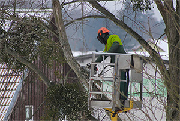

When the salty breezes whip through coastal neighborhoods, the majestic trees that dot the landscape can sometimes destroy everything in their path. From unexpected storms to sudden tree ailments, there are moments when these beautiful giants need urgent attention. As residents of this beautiful southern New Jersey county, understanding the intricacies of emergency tree services is crucial. These services are important not just for the safety of our homes, but also for the preservation of our local environment. Emergency tree services play a critical role in maintaining the safety, health, and aesthetics of suburban neighborhoods. If you find yourself in need of emergency tree service in Atlantic County this winter, reach out to Ben Bivins Tree Experts!
Services Provided by Emergency Tree Experts
In addition to routine tree care, emergency tree services are important for businesses as well as residences. Even with fall tree care like pruning and trimming of limbs and branches, damages to property can occur. When the storms hit, our crew will be ready to help with these valuable emergency tree services.
- Emergency Tree Removal: After severe weather events, such as storms, hurricanes, or heavy snowfalls, trees can become uprooted, split, or otherwise damaged. Emergency tree removal helps prevent further damages to properties, cars, power lines, and roads.
- Branch Trimming: Broken, dying, or dangling branches can pose risks. Expert tree services can safely remove these branches to prevent injury or damage. It is always crucial to hire a professional to perform this service due to the risk involved.
- Stump Grinding or Removal: After a tree has been cut, the stump remains. It can be a hazard, especially in public areas, and needs to be ground down or removed entirely.
- Tree Health Assessments: After a significant event or if a tree looks unhealthy, experts can assess the tree’s health, determining if it’s at risk of falling or if it has diseases that might spread to other nearby trees.
- Storm Damage Cleanup: Post-storm cleanup often involves more than just tree removal. Experts can clear away branches, leaves, and other debris.
Tree Care is Important for Suburban Neighborhoods
Storm damage can bring neighborhoods or even towns to its knees. For suburban neighborhoods, emergency tree services are indispensable. They offer a rapid response to tree-related hazards, ensuring the safety of residents, protection of property, and the overall health and appearance of the community. Residents are advised to have the contact information of local tree experts on hand and to act quickly when they notice potential tree hazards.
- Safety Concerns: Unstable trees or hanging branches can fall without warning, causing injuries or fatalities. They can damage homes, vehicles, power lines, and other structures. Immediate response from emergency tree services ensures these hazards are quickly addressed.
- Health of Surrounding Trees: Trees infected with diseases or pests can affect surrounding trees. Timely intervention can prevent the spread of these problems.
- Uninterrupted Utilities: Trees falling on power lines can cause outages. Quick response times ensure power is restored faster, and potential hazards are removed.
- Road Clearing: Fallen trees can block roads, preventing access for residents and emergency vehicles. Immediate removal ensures roads remain accessible.
- Protection of Property: Falling trees or branches can lead to significant property damage. Prompt removal or trimming minimizes the potential for further damage.
Call Us for Atlantic County Emergency Tree Service

Tree services play an indispensable role in ensuring the beauty and safety of the environment. Tree service professionals like Ben Bivins Tree Experts offer a range of emergency tree service in Atlantic County from branch trimming, tree health assessments, to complete tree removal. Our expertise ensures that potential hazards are swiftly addressed and the overall health of your trees is maintained. By actively engaging and supporting these services, we not only safeguard our homes and roads but also contribute to the well-being of our natural surroundings. It’s important to recognize the impact of these services, and always be ready to call on the experts when our trees need it most.